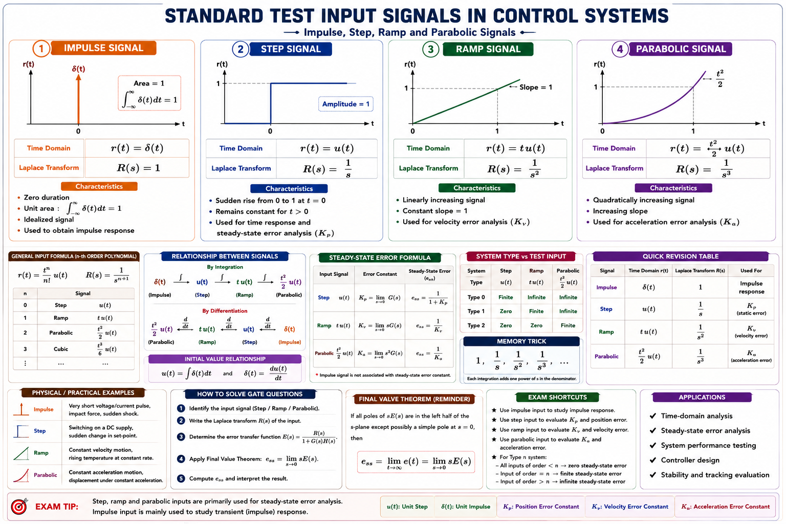
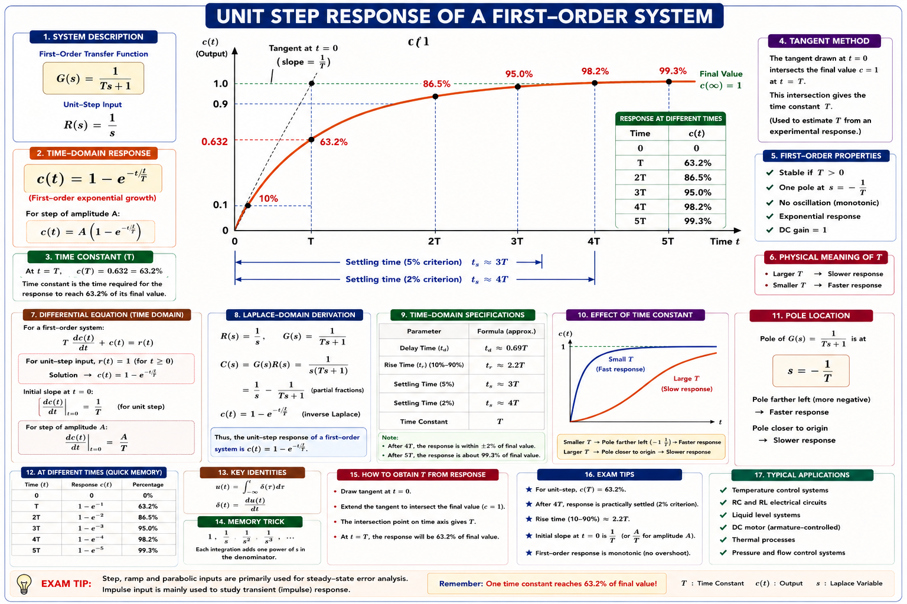
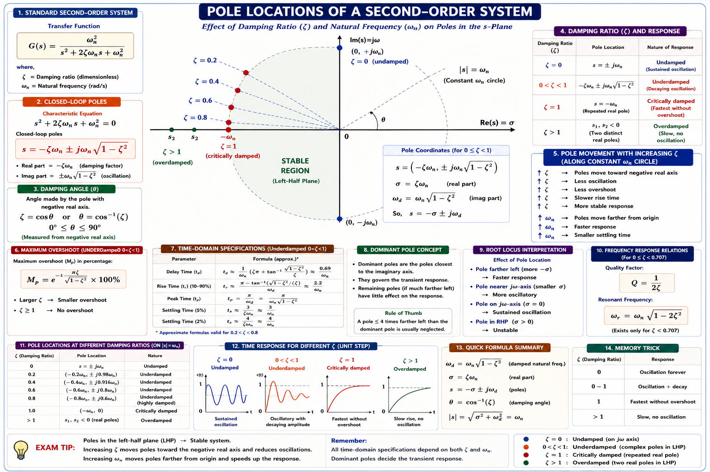
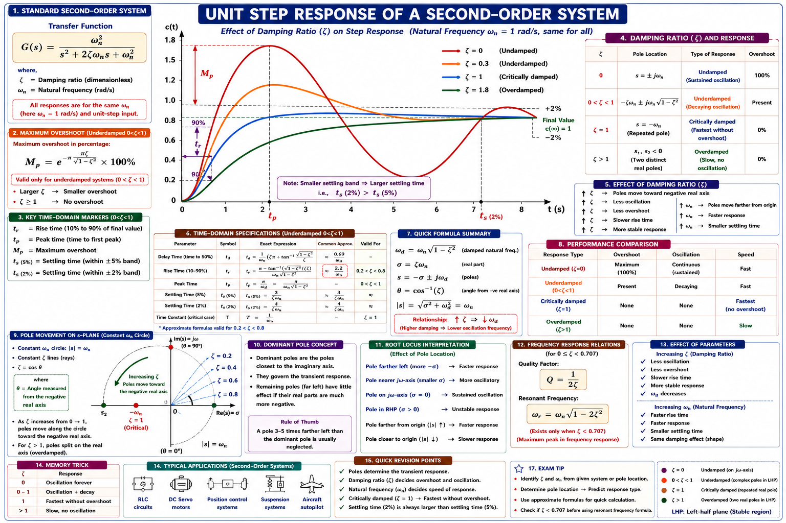
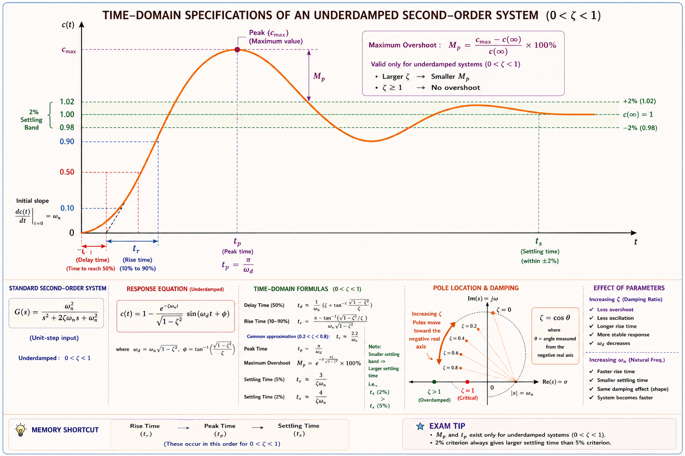
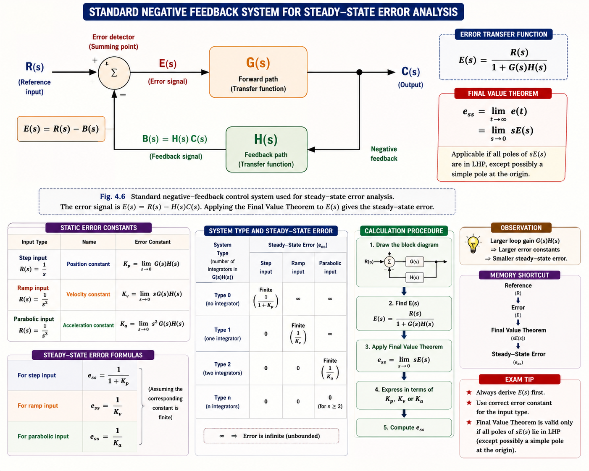

Standard test signals, first-order and second-order system responses, time-domain specifications (rise time, peak time, overshoot, settling time), steady-state error, and static error constants — the single most numerically-tested chapter in GATE EE and IES Control Systems.
Every control system — a lift stopping at a floor, a robotic arm placing a component, a voltage regulator holding 230 V, an aircraft autopilot levelling out — must eventually settle down and do its job. But how it gets there matters just as much as whether it gets there. Does the lift overshoot the floor and bounce back? Does the voltage regulator oscillate before settling? Does the robotic arm take 50 ms or 5 seconds to reach position? Time response analysis is the branch of control theory that answers exactly these questions — it studies how a system's output c(t) evolves with time when a known input r(t) is applied.
A system may be perfectly stable (it does reach the desired value eventually) yet still be unusable in practice if it overshoots badly, oscillates for too long, or reacts too slowly. Time response specifications — rise time, overshoot, settling time — are the practical "report card" that tells a design engineer whether a controller is good enough to deploy.
This chapter builds directly on the transfer function C(s)/R(s) you obtained by block diagram reduction or Mason's gain formula in Chapter 3. Given that transfer function and a standard test input, we now find \(c(t)\) — the actual time-domain behaviour — and extract numbers that GATE, IES and PSU papers test relentlessly.
We cannot test a control system against every possible real-world input in advance, so control engineers use a small family of standard test signals that mimic the harshest practical demands: a sudden disturbance (impulse), a sudden change in set-point (step), a steadily changing target (ramp), and a constantly accelerating target (parabolic). If a system performs well against these idealised signals, it will behave predictably against real disturbances too.

| Signal | Time Domain r(t) | Laplace R(s) | Physical Meaning |
|---|---|---|---|
| Impulse | Aδ(t) | A | Sudden shock / disturbance of very short duration and large magnitude |
| Step | A·u(t) | A/s | Sudden, instantaneous change in set-point (most commonly used test signal) |
| Ramp | A·t·u(t) | A/s² | Target changing at constant rate — e.g. tracking a constant-velocity target |
| Parabolic | A(t²/2)·u(t) | A/s³ | Target under constant acceleration — e.g. tracking a constant-acceleration target |
The unit step is used almost exclusively for transient specifications (t_r, t_p, M_p, t_s) because it represents the worst-case "sudden change" a system will realistically face. Ramp and parabolic inputs are reserved for steady-state error analysis, where we check if the system can track a moving target without a growing lag.
Each signal is the time-integral of the one before it — impulse → step → ramp → parabolic. In the s-domain this means each successive signal simply divides by an extra factor of s:
A first-order system has a transfer function with a single pole — physically, this models systems with one energy-storage element: an RC circuit (one capacitor), a thermal system (one thermal mass), or a DC motor's speed loop (one dominant electrical or mechanical time constant).
Here T is the time constant of the system, in seconds — the single parameter that fully determines how fast the system responds.
For a unit step input, R(s) = 1/s, so:

| Time elapsed | t = T | t = 2T | t = 3T | t = 4T | t = 5T |
|---|---|---|---|---|---|
| c(t) as % of final value | 63.2% | 86.5% | 95.0% | 98.2% | 99.3% |
A first-order system is considered practically "settled" after 4T to 5T — this is exactly where the ±2% settling-time criterion for first-order systems comes from (4T ≈ 98.2%, well within 2% of final value).
For a unit ramp input, R(s) = 1/s²:
The steady-state error for a ramp input to a first-order (Type 0, since 1/(Ts+1) has no pole at origin — this specific unity-feedback closed loop form is treated as Type-1 in most GATE textbooks when derived from G(s)=1/Ts) is a constant lag of T — the output tracks the ramp but permanently trails behind by T seconds worth of ramp value. This links directly to the steady-state error discussion in §4.9.
Students often assume every first-order system behaves identically — but the formula \(c(t) = 1 - e^{-t/T}\) applies to the closed-loop unity feedback response of the specific transfer function \(1/(Ts+1)\). Always verify the given transfer function is already in this standard first-order closed-loop form before applying these shortcut formulas directly.
Most real control systems — motor position/speed loops, mechanical suspensions, RLC circuits, voltage regulators with a single dominant feedback loop — are well-approximated by a second-order transfer function. This is the single most important model in the entire Control Systems syllabus because nearly every performance specification (overshoot, settling time, rise time) has a clean closed-form formula only for this standard form.
The denominator set to zero gives the characteristic equation, whose roots are the closed-loop poles:
Define the damped natural frequency ω_d = ω_n√(1−ζ²) — this is the actual frequency of oscillation you observe in the underdamped step response (it is always less than ω_n because damping slows the oscillation down).

Depending on the value of ζ, the same second-order system can behave in four qualitatively different ways. Recognising which case applies — instantly, from the value of ζ or from the pole locations — is one of the highest-yield skills for GATE.

| Case | ζ value | Pole nature | Step response behaviour |
|---|---|---|---|
| Undamped | ζ = 0 | Purely imaginary, s = ±jω_n | Sustained (undying) oscillation forever — never settles |
| Underdamped | 0 < ζ < 1 | Complex conjugate pair, negative real part | Damped oscillation — overshoots then settles; most common practical case |
| Critically damped | ζ = 1 | Real, equal, repeated: s = −ω_n, −ω_n | Fastest possible response with zero overshoot |
| Overdamped | ζ > 1 | Real, unequal, both negative | Slow, sluggish, no overshoot — approaches final value gradually |
For the same ω_n, the ranking from fastest to slowest settling is: critically damped > underdamped (moderate ζ) > overdamped. Critically damped is the boundary case — the fastest response that still has zero overshoot. This exact fact is tested repeatedly as a conceptual (non-numerical) GATE question.
Because the underdamped case (0 < ζ < 1) is the one every time-domain specification is derived from, it deserves a full step-by-step derivation. For a unit step input, R(s) = 1/s:
Using partial fractions and completing the square in the denominator (with σ = ζω_n and ω_d = ω_n√(1−ζ²)):
Taking the inverse Laplace transform:
This single equation is the source of every formula in §4.7 and §4.8. Physically it says: the output rises toward 1, overshoots, and the overshoot decays inside an exponential envelope e^(−ζω_n t)/√(1−ζ²) while oscillating at frequency ω_d.

Set c(t) = 0 and solve sin(ω_d t + θ) = 0 for the smallest positive t to find t_r (first crossing of the final value). Differentiate c(t) and set dc/dt = 0 to find t_p (the peak occurs when the sinusoidal term is momentarily stationary). Both derivations are standard GATE-level calculus and are shown fully in §4.7.
These specifications quantify how fast a system responds. All formulas below apply to the standard underdamped second-order system with parameters ζ and ω_n.
Time taken for the response to reach 50% of its final value, for the first time.
For underdamped systems, rise time is conventionally the time for the response to go from 0% to 100% of the final value for the first time (unlike overdamped systems, where 10%–90% is used since the response never reaches 100% until t → ∞).
Larger ω_d (i.e. larger ω_n, or smaller ζ) → smaller t_r → faster rise. This is why increasing controller gain (which typically increases ω_n) speeds up the response — but usually at the cost of a lower ζ and hence more overshoot. This trade-off is central to controller tuning.
Time taken to reach the first (and largest) peak of the overshoot.
Students frequently confuse t_r's formula (π − θ)/ω_d with t_p's formula π/ω_d. Remember: t_p uses the full π because the peak occurs at exactly half the oscillation period; t_r uses (π − θ) because it depends on where the response starts relative to the sinusoid's phase θ.
The amount by which the response exceeds its final steady-state value, expressed as a fraction (or percentage) of that final value. Substitute t = t_p = π/ω_d back into c(t):
Notice that ω_n does not appear anywhere in the M_p formula. This means overshoot is controlled entirely by the damping ratio ζ, regardless of how fast (ω_n) the system is. This is one of the most tested conceptual facts in GATE Control Systems.
| ζ | 0.1 | 0.2 | 0.3 | 0.4 | 0.5 | 0.6 | 0.7 | 0.8 | 1.0 |
|---|---|---|---|---|---|---|---|---|---|
| %M_p | 72.9% | 52.7% | 37.2% | 25.4% | 16.3% | 9.5% | 4.6% | 1.5% | 0% |
The commonly used "well-damped" design range ζ = 0.4–0.7 gives overshoot roughly between 4.6% and 25.4% — this is why most practical controllers are tuned to ζ ≈ 0.6–0.707, balancing speed against acceptable overshoot.
Time required for the response to reach and stay within a specified tolerance band (usually ±2% or ±5%) of the final value. The response envelope is bounded by 1 ± e^(−ζω_n t)/√(1−ζ²), so t_s is found by setting the envelope equal to the tolerance:
where τ = 1/(ζω_n) is the time constant of the envelope — analogous to the T of a first-order system, since the dominant decay is governed purely by the real part of the pole, σ = ζω_n.
The 2% criterion needs 4 time constants (4/ζω_n); the 5% criterion needs 3 time constants (3/ζω_n). Both numbers come from solving e^(−x) = tolerance: e^(−4) ≈ 0.018 (~2%), e^(−3) ≈ 0.050 (5%).
Unlike M_p, settling time depends on the product ζω_n (the real part of the pole), not on ζ in isolation. Two systems with the same ζ but different ω_n will have completely different settling times. Always check both parameters before comparing t_s across systems.
While §4.7–4.8 describe the transient (short-term) behaviour, steady-state error describes the long-term accuracy of a system — how far off the output settles from the desired input, after all transients have died out. A system with excellent transient response but poor steady-state accuracy is still an unacceptable design.

For the error signal E(s) = R(s)/(1 + G(s)H(s)) in a unity/non-unity feedback loop, steady-state error is found using the Final Value Theorem — avoiding the need to find e(t) explicitly:
The Final Value Theorem is valid only if all poles of sE(s) lie in the left half s-plane (i.e. the closed-loop system must first be checked for stability). Applying it to an unstable system gives a meaningless finite answer — always confirm stability first, using Routh-Hurwitz if needed.
The steady-state error therefore depends on two things: which test signal R(s) is applied, and how many poles G(s)H(s) has at the origin (s = 0) — called the system type, covered next in §4.10.
To avoid re-deriving e_ss from scratch for every input, control engineers define three static error constants — one for each standard test signal — computed directly from the open-loop transfer function G(s)H(s).
The type of a system is simply the number of poles of G(s)H(s) located exactly at s = 0 (i.e. the power of s in the denominator that is factored out as sⁿ). This single integer determines, in advance, which error constants are finite and which are zero or infinite.
| System Type | K_p | K_v | K_a | e_ss (Step) | e_ss (Ramp) | e_ss (Parabolic) |
|---|---|---|---|---|---|---|
| Type 0 | Finite | 0 | 0 | 1/(1+K_p) — finite | ∞ | ∞ |
| Type 1 | ∞ | Finite | 0 | 0 | 1/K_v — finite | ∞ |
| Type 2 | ∞ | ∞ | Finite | 0 | 0 | 1/K_a — finite |
| Type ≥ 3 | ∞ | ∞ | ∞ | 0 | 0 | 0 |
Each increase in system type eliminates the error for one more "level" of input: Type 0 can only track a constant (with offset), Type 1 tracks a constant exactly and a ramp with constant lag, Type 2 tracks a ramp exactly and a parabola with constant lag. This diagonal pattern in the table is worth memorising visually rather than the individual formulas.
The simple formulas e_ss = 1/(1+K_p) etc. apply only to unity feedback systems [H(s) = 1]. For non-unity feedback, always go back to the fundamental Final Value Theorem formula e_ss = lim(s→0) sR(s)/[1+G(s)H(s)] rather than misapplying the shortcut formulas — this is a very common source of errors in GATE numericals.
Step 1 — Compare with standard form:
Matching: ω_n² = 25 → ω_n = 5 rad/s. Matching: 2ζω_n = 6 → ζ = 6/(2×5) = 0.6
Step 2 — Peak time:
Step 3 — Percent overshoot:
Step 4 — Settling time (2%):
ζ = 0.6, ω_n = 5 rad/s, t_p = 0.785 s, %M_p = 9.48%, t_s(2%) = 1.33 s.
Starting from the overshoot formula and solving for ζ:
ζ = 0.5 (minimum required damping ratio). Any ζ ≥ 0.5 will keep overshoot at or below 16.3%, since %M_p decreases monotonically as ζ increases.
System type: G(s) has exactly one pole at s = 0 (the factor "s" in the denominator) → Type 1 system.
Steady-state error for unit ramp:
Answer: (a) 0.1
Step 1 — Find T from rise time:
Step 2 — Time to reach 98% (≈ 4T):
T = 2 s; the response reaches 98% of its final value at t ≈ 8 s (matching the 4T rule from §4.3).
Step 1 — Find ζ from %M_p = 20%:
Step 2 — Find ω_n from t_p = 1 s:
ζ ≈ 0.456, ω_n ≈ 3.53 rad/s.
Time Response Analysis is consistently one of the highest-weightage topics in GATE EE and IES E&T Control Systems:
For a standard second-order system with transfer function ω_n²/(s²+2ζω_ns+ω_n²), which of the following statements about the maximum percentage overshoot M_p is correct?
Explanation: %M_p = e^(−ζπ/√(1−ζ²)) × 100 — algebraically, ω_n cancels out completely. ω_n scales the time axis (affects t_p, t_s, t_r) but never the shape/amplitude of the overshoot.
A unity feedback system has open-loop transfer function G(s) = K/[s(s+4)]. For the steady-state error to a unit ramp input to equal 0.1, the value of K should be:
Explanation: K_v = lim(s→0) sG(s) = lim(s→0) sK/[s(s+4)] = K/4. e_ss = 1/K_v = 4/K = 0.1 → K = 40.
For a second-order system with fixed ω_n, which damping case gives the fastest response that still has zero overshoot?
Explanation: Critically damped is the boundary case — for ζ < 1 you get overshoot; for ζ > 1 the response slows down further as the second (slower) real pole dominates. ζ = 1 is the fastest response with no overshoot at all.
A Type 0 unity feedback system is subjected to a unit ramp input. The steady-state error will be:
Explanation: For Type 0, K_v = lim(s→0) sG(s)H(s) = 0 (no pole at origin to cancel the extra s). Since e_ss(ramp) = 1/K_v = 1/0 → ∞, a Type 0 system can never track a ramp — the error grows without bound.
Both t_p and t_r divide by ω_d, but the numerator differs: t_p = π/ω_d uses the full half period; t_r = (π−θ)/ω_d is shortened by the starting phase angle θ = cos⁻¹ζ. Sketch the sine wave mentally — the peak is always at the half-period mark, rise happens slightly earlier.
Position (K_p) pairs with step, Velocity (K_v) pairs with ramp, Acceleration (K_a) pairs with parabolic — and each constant needs exactly N poles at the origin (N = 0, 1, 2 respectively) to be finite and non-zero.
Have a question on first/second-order response, damping ratio, overshoot, settling time, or steady-state error? Type below or pick a suggestion.
Impulse \(\delta(t)\to 1\), Step \(u(t)\to 1/s\), Ramp \(t\cdot u(t)\to 1/s^2\), Parabolic \((t^2/2)u(t)\to 1/s^3\). Step used for transient specs; ramp/parabolic for steady-state error.
\(C(s)/R(s)=1/(Ts+1)\). \(c(t)=1-e^{-t/T}\). \(63.2\%\) at \(t=T\). Settles (\(98\%\)) at \(\approx 4T\). \(t_r=2.2T\). Never overshoots.
\(C(s)/R(s)=\omega_n^2/(s^2+2\zeta\omega_ns+\omega_n^2)\). \(\zeta=0\) undamped, \(0<\zeta<1\) underdamped, \(\zeta=1\) critically damped, \(\zeta>1\) overdamped. Pole angle \(\theta=\cos^{-1}\zeta\).
\(t_d\approx(1+0.7\zeta)/\omega_n\). \(t_r=(\pi-\theta)/\omega_d\). \(t_p=\pi/\omega_d=\pi/(\omega_n\sqrt{1-\zeta^2})\). Larger \(\omega_d\) → faster response.
\(\%M_p=e^{-\zeta\pi/\sqrt{1-\zeta^2}}\times 100\) — depends ONLY on \(\zeta\). \(t_s(2\%)=4/(\zeta\omega_n)\). \(t_s(5\%)=3/(\zeta\omega_n)\). Depends on \(\zeta\omega_n\), not \(\zeta\) alone.
\(e_{ss}=\lim_{s\to 0} sR(s)/[1+G(s)H(s)]\). Type \(N\) system: \(N\) poles at origin. \(K_p\), \(K_v\), \(K_a\) finite only at matching type; \(e_{ss}=1/(1+K_p)\), \(1/K_v\), \(1/K_a\).
All technical content is derived from the following standard textbooks and learning resources. All explanations, derivations, diagrams and examples are original to Aarova AI.